1
Production
Your own sentences, spoken and written. Not a quiz and not recognition: you build them and you say them.
Every day you say and write your own sentences, AI corrects you on the spot and explains every mistake, and the review system makes sure nothing slips away. 15 minutes a day, on your own, with no one to book.
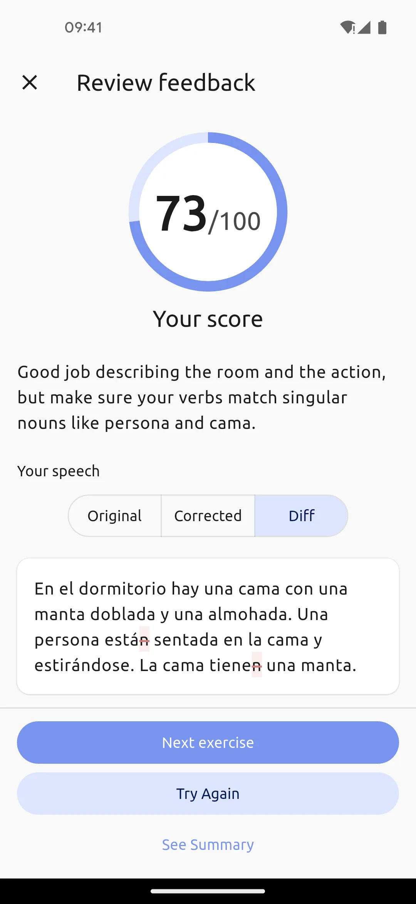
You know Spanish from recognising it: you see a sentence and you know what it means, you hear a question and you catch the sense. That is what school trained, and that is what the apps trained, where you tap the right answer.
You recognise a song from its first two chords, so now sing it properly, with the words, on beat. Not going so well? Speaking works exactly the same way.
You see a sentence and you know what it means. You pick the right one of four options, match the pairs, fill the gap. The brain gets one question: do you recognise it?
You have to build your own sentence and say it out loud. On your own, against the clock. There are no four options here, just an empty space and your voice.
For years, school and the apps drilled recognition with you. Nobody ever checked your speaking, so that skill was simply never trained. That is why you freeze, and it is not a talent problem.
The points, the levels and the flame keep growing, because nothing in them ever asked you to say or write a sentence of your own. On the language learning forums this same story comes back every week.
Half an hour in the app every day for six months, I finished the whole course, and I still cannot speak.
A 1500 day streak in the app, and a conversation still does not happen.
Everyone sells “fluent in 3 months”, while people who have studied for years cannot get a sentence out.
These are not exceptions, they are the standard result of the standard method.
Speaking is a skill, so it grows the way every skill grows: from practice that trains it directly. That is how you build piano and swimming, so a language is no different.
Your own sentences, spoken and written. Not a quiz and not recognition: you build them and you say them.
Find out what you said, what should have come out, and why. Not just “good”, but an explanation next to the mistake.
The system comes back with whatever started to fade, exactly when you need it. You manage nothing yourself.
The dashboard tells you plainly what is waiting: a few numbers on top and a short list of what is due underneath. You do them in any order, and everything you collect lands in one review system.
You pick a level from A1 to C2, a genre and a mood, and the story is written in seconds. You listen to the narration, tap once to show the translation of a sentence, and tap any word to add it to your vocabulary.
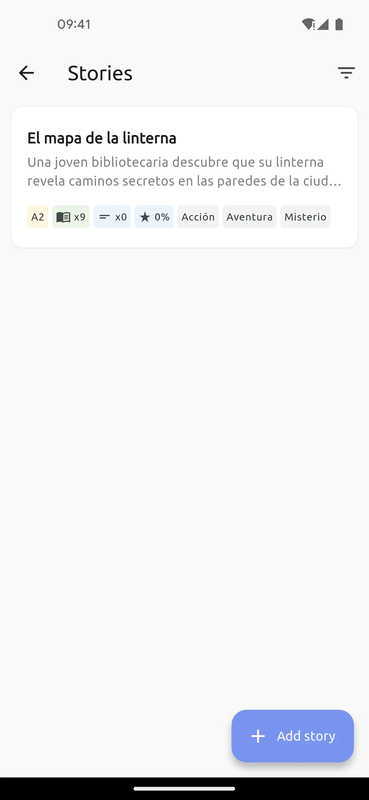
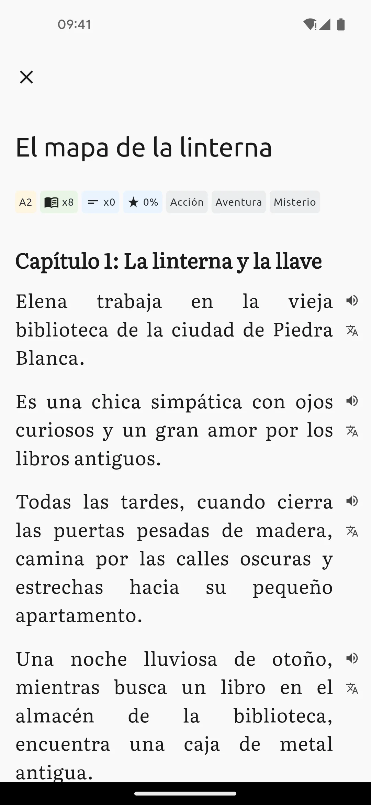
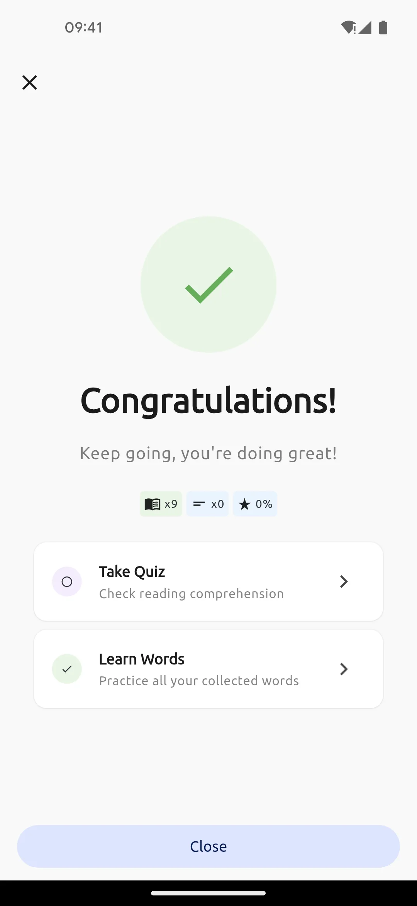
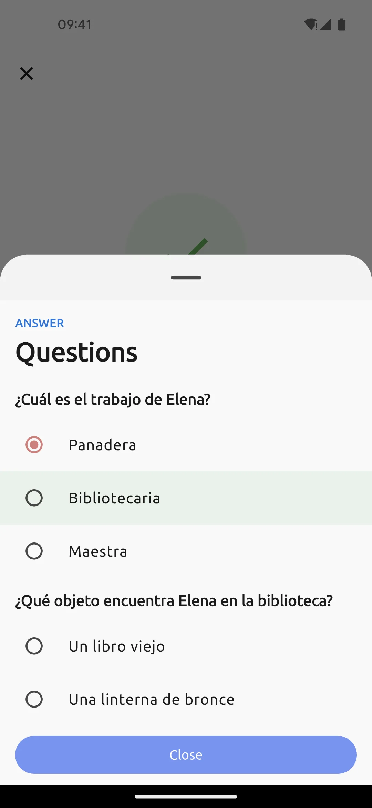
Describe a picture, answer a question, or act out a scene from real life: ordering a coffee, asking for directions. You record yourself, and you get a score, a transcript of what you actually said, the corrected version beside it and an explanation at every mistake.
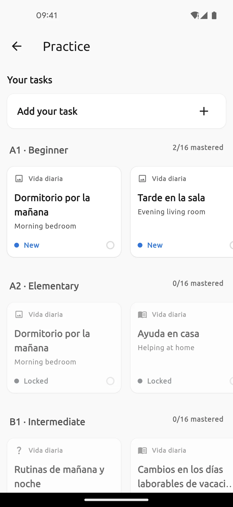
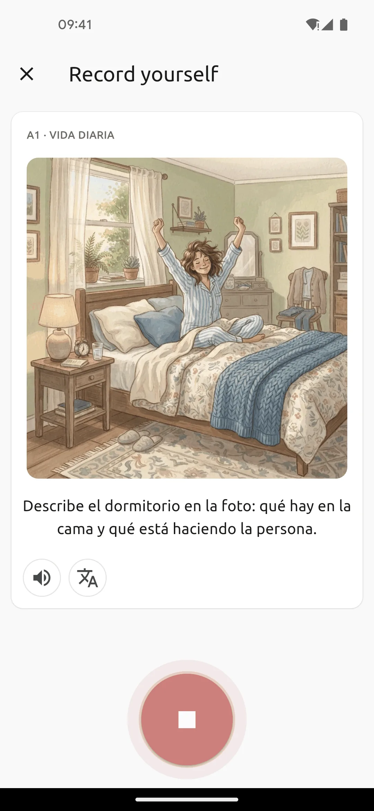
A word reaches you from a story or from your own lookup. You get the definition, translations, examples and collocations, and then you write your own sentence with that word. AI checks the grammar and the context, shows your sentence next to the corrected one and explains what was wrong.
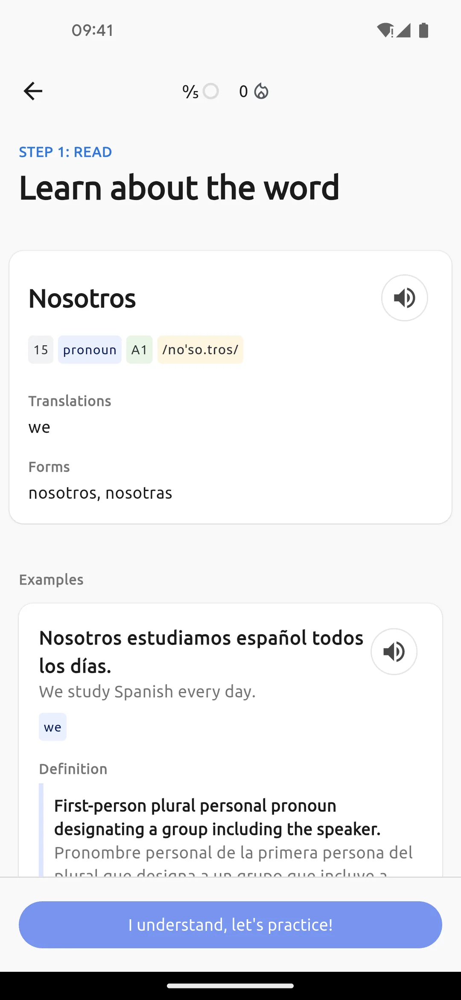
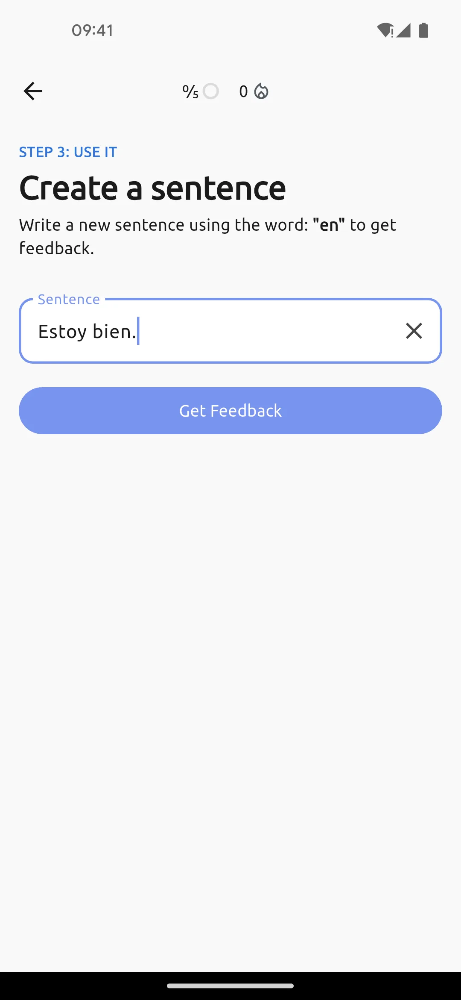
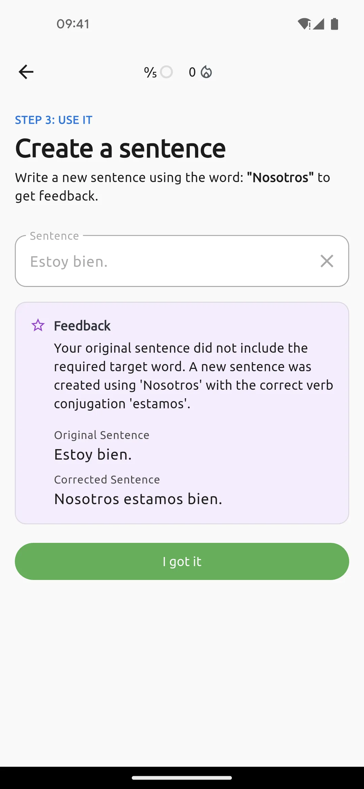
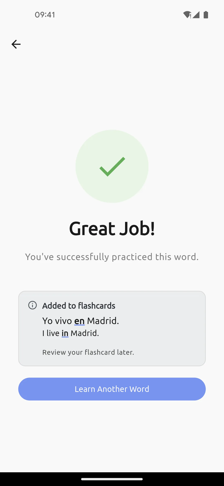
The card shows one side and hides the other. You rate how it went, and the system moves the next reviews on its own. Words from stories, corrections from speaking and your own sentences all go into one deck, so you manage nothing separately.
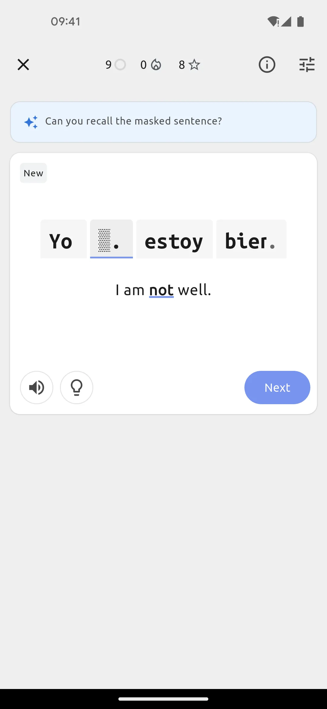
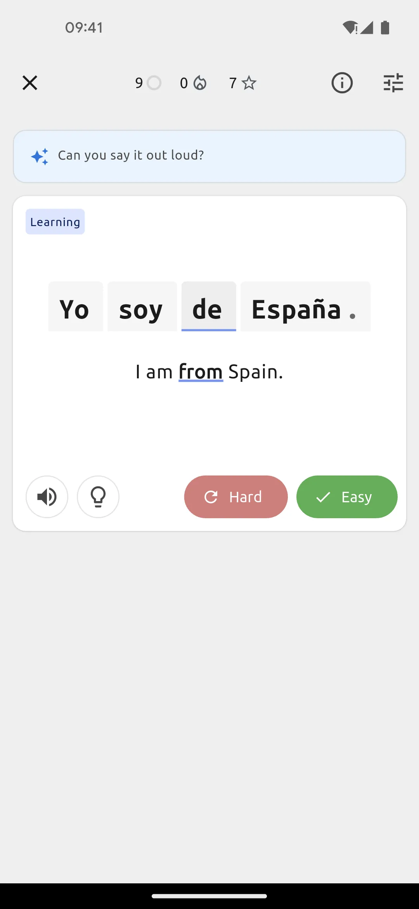
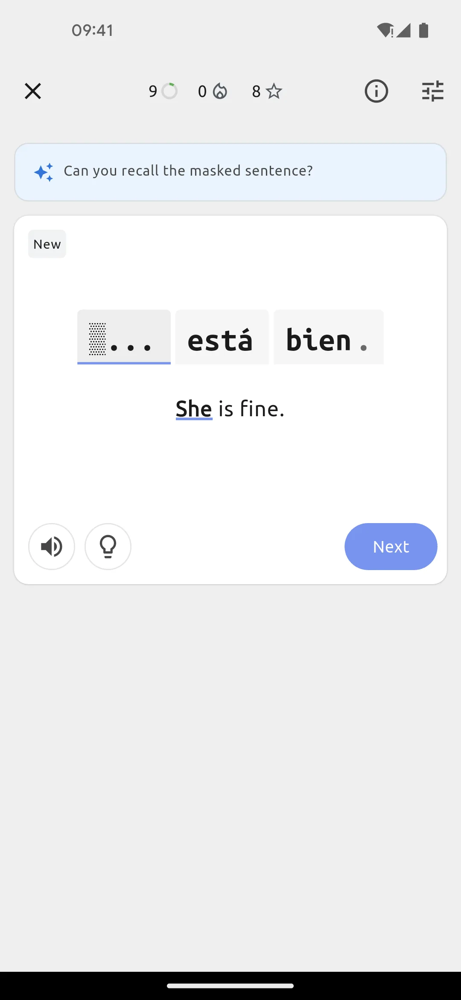
Which is why what you do in one activity strengthens all the others.
Speaking is not decided by how much you know but by what happens during practice. Four criteria and five ordinary paths, and each one has real strengths plus at least one real trap.
| Path | Production | A real correction | Every day | No audience |
|---|---|---|---|---|
| Drill app | no | only right or wrong | yes | yes |
| Podcasts and books | no | no | yes | yes |
| A tutor and conversations | yes | yes | rarely | no |
| Talking to yourself | yes | no | yes | yes |
| Practice with AI, which is Soliloquy | yes | yes | yes | yes |
The criteria come from what really decides speaking: production, a real correction, doing it daily, and having no audience.
A real conversation brings chaos, interruptions and spontaneity, AI will not give you that, and we do not pretend otherwise. The problem sits somewhere else: the plan to book a tutor someday almost never turns into regular practice. Soliloquy closes the gap that stays empty in most plans, which is production with a correction, every day.
You configure nothing and you postpone nothing. Here is what it actually looks like.
Language, level from “I am just starting” to “advanced”, your motivation, the topics you are interested in, and the narrator voice.
You open the app and see a short list: a story, speaking, words, reviews. Each line shows how many are waiting. You choose the order, and nothing is locked.
You say a sentence and you get the transcript and the corrected version. From that moment you have an error diary that tells the story of your speaking.
You asked yourself these questions, so I will not skip them, including the ones that are inconvenient for us.
It corrects concretely. Your speech turns into a transcript, you get the corrected version beside it and an explanation at every mistake: why that tense, why that preposition, why this sounds more natural. Every mistake lands in the diary and turns into a flashcard on the way.
Check it yourself: in the trial deliberately say “Soy 30 años” instead of “Tengo 30 años” and see whether it catches that.
No, and that is not the goal. The goal is comprehensibility: being understood easily and without effort for the listener. An accent is part of you rather than a defect, and advanced non-native speakers talk with an accent and function in the language normally.
You get a pronunciation signal where something genuinely blocks understanding. You will not get a promise to lose your accent, and you will get a promise of being better understood.
In some things it is, and I will not twist that. A real conversation brings chaos, interruptions, jokes and spontaneity.
AI is better at three other things: it is there at 22:30 when you just remembered, it never tires of your mistakes and never sighs impatiently, and you do not need courage or a good face for it. It is not either or. The tutor for spontaneity, AI practice for the foundation, every day.
Breaks are part of the method rather than an offence. Nothing is lost: your progress, words and mistakes stay, and when you come back the system tells you what to review first.
This plan is for returning, not for perfection. Anyone who builds a habit on guilt builds it on sand.
Honestly: weeks and months of daily practice, not fluent in 3 months. You will not get a CEFR level with a date, because we do not make those promises here.
What changes first: you open your mouth without freezing, sentences come back faster, and you start seeing your own mistakes yourself. What changes last: pronunciation and the feeling of fluency.
Your account, your mistakes, your words and your notes stay yours. Cloud sync runs automatically: new phone, log in, and everything comes back. Your progress does not disappear with the app, and we do not sell your data to advertisers.
The trial gives you the full loop and premium only lifts the limits. Run it for ten evenings of fifteen minutes and check the three mechanisms: production, corrections, reviews.
Did I say something in Spanish out loud every single day?
Did the corrections catch my real mistakes or only general remarks?
Do I remember the words and sentences from the first day, without peeking?
Two yes answers out of three mean the mechanism works for you. If it is zero or one, then do not buy, just write to us about what does not click, because that is worth more to us than praise. At worst you keep ten days of speaking practice and a diary of your own mistakes, and those things stay even if you say no.
@soliloquy.fun on Instagram
Before you download anything: say three sentences about your day in Spanish tonight. Nobody is listening, so a mistake costs nothing.